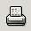

4.2. The Standard Toolbar.
The standard toolbar is shown in Figure 4-2.

{kind=link}
The Standard Toolbar gives the user access to file operations, printing, movement of data blocks, the undo system, and to some of the powerful tools like the function creator and the graphing system.
 New File.
New File.
Create a New file
 Open
Open
Open an existing file.
 Save
Save
Save the current worksheet to disk.
-  Print
Prints the current worksheet to a file or a printer.
 Print Setup
Print Setup
Displays a print preview of the current worksheet.
 Cut
Cut
Copy the cells in the current selection to the cut buffer and delete them.
 Copy
Copy
Copy the cells in the current selection to the cut buffer.
 Paste
Paste
Paste the contents of the cut buffer into the active cell.
 Undo
Undo
Undoes the last operation undertaken.
 Redo
Redo
This is the reverse of the undo operation, restoring its orginal state.
 Sum into the current cell
Sum into the current cell
Sums the selected region in the selected cell.
 Sum into the current cell
Sum into the current cell
Sums the selected region in the selected cell.
 Sort Ascending
Sort Ascending
Sorts the selected region in ascending order based on the first column selected.
 Sort Descending
Sort Descending
Sorts the selected region in descending order based on the first column selected.
 Graph
Graph
This button calls the graph guru to create a graph.
 Sort Descending
Sort Descending
Sorts the selected region in descending order based on the first column selected.
 Sort Ascending
Sort Ascending
Sorts the selected region in ascending order based on the first column selected.
 Sort Descending
Sort Descending
Sorts the selected region in descending order based on the first column selected.